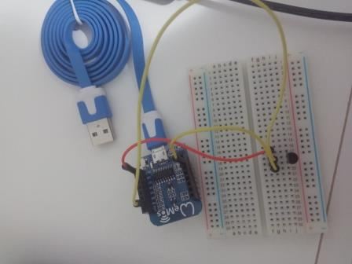

LM35
O sensor LM35 é um sensor de precisão que apresenta uma saída de tensão linear proporcional à temperatura em que ele se encontrar no momento, tendo em sua saída um sinal de 10mV para cada Grau Célsius de temperatura.
Hardware
-
Fios Jumper’s
-
Protoboard
-
Wemos D1 mini
-
LM35
Agora vamos conectar os componentes do projeto.Veja como ficou o nosso:

Ao executar o programa, o LM35 vai enviar informações pela entrada analógica do Arduino, que por sua vez vai tratar essas informações, converter a tensão do sensor para graus celsius.
Existem outros sensores de temperatura mais modernos, como o DS18B20, que é um sensor digital, possui bibliotecas próprias, possibilidade de ligar mais de um sensor na mesma porta do Arduino, e várias outras vantagens.
Datasheet LM35 :
Datasheet LM35Software
Em resumo, nosso programa lerá qual é o valor do sinal em A0, que varia de 0 a 1023, onde 0 corresponde a 0Volts e 1023 corresponde a 3Volts. Como sabemos, 1ºC é igual a 10mV. Sendo assim, temos:
Tensão em A0 = (Valor lido em A0)*(3/1023)
Temperatura = Tensão em A0/10mV
Logo:
Temperatura = [(Valor lido em A0)*(3/1023)]/10mV